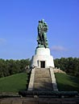
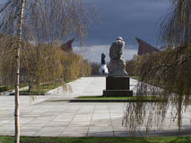
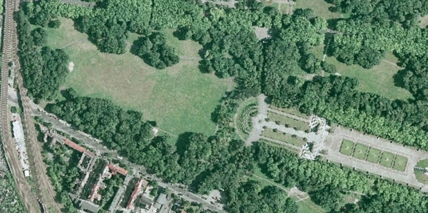

Sowjetisches Ehrenmal
|
|  |
- Das sowjetische Ehrenmal wurde am 8. Mai 1949 eingeweiht. Gestaltet ist es als einheitliches künstlerisches Ensemble. - Das sowjetische Ehrenmal ist gleichzeitig Gedenkstätte und Friedhof. Es ist Grabstätte von mehr als 5.000 Soldaten der Roten Armee, die 1945 in den Kämpfen um Berlin ihr Leben lassen mussten. |
 |
|  |